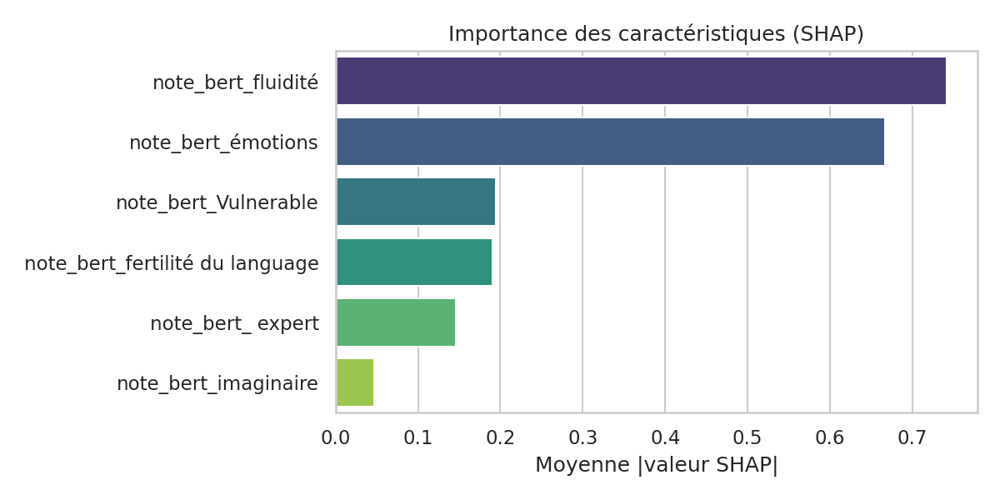
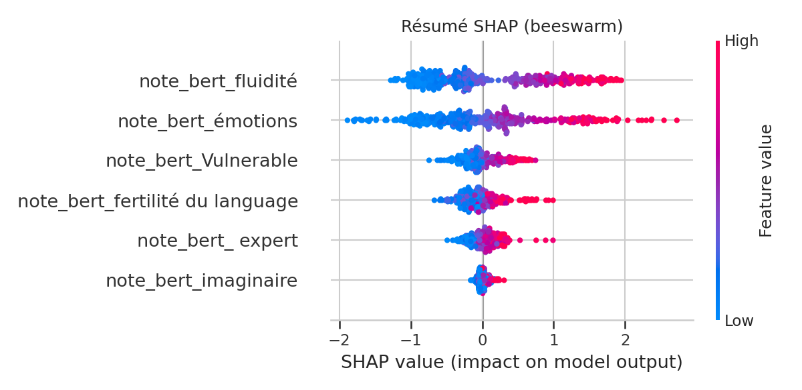
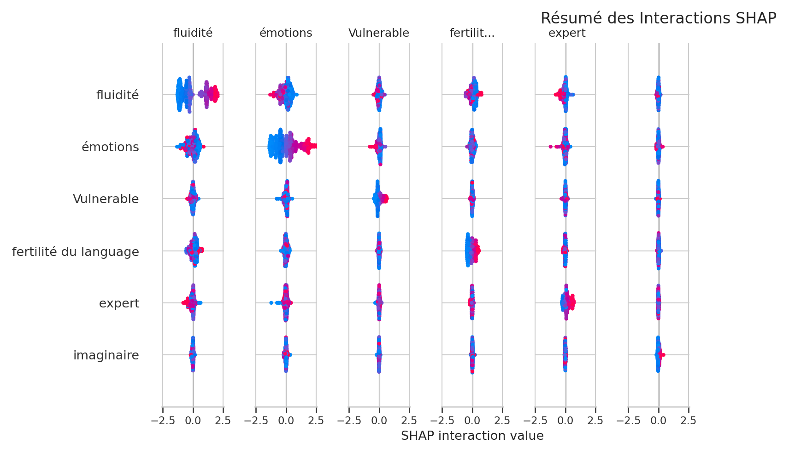

École des Mines de Saint-Étienne
BERT: Réinventer l'Analyse
des Entretiens d'Artisans
L'intelligence artificielle au service de l'analyse d'entretiens
Aymeric Eyer | 29 Janvier 2026
Contexte du Projet
Objectifs
- Permettre une annotation automatisée et reproductible des entretiens.
- Proposer des outils pour permettre l'analyse des entretiens.
- Fournir moyens de compréhension des entretiens.
Architecture en 4 Phases
Phase 0: Données Préparées
2. Extraction parole artisans
3. Segmentation (3 niveaux)
4. CSV structuré.
- 50 fichiers d'entretiens
- 3,200+ phrases extraites
PHASE 1
Extraction d'Entités - Détection Outils
Approche dictionnaire via Wikipedia
Détection des outils
- Modèles: CamemBERT, FlauBERT
- Problème: Pas de tag spécifique pour outils artisanaux.
- Verdict: Inefficace sur ce domaine spécialisé.
- Source: Extraction automatique Wikipedia.
- Méthode: Comparaison stricte (exact matching).
- Avantage: Aucune annotation manuelle requise.
Résultats Phase 1
- Taille: 49 outils uniques extraits, 343 outils mentionnés au total.
- Précision: Haute (très peu de faux positifs).
- Structure: Catégorisation par métier, dictionnaire des outils...
PHASE 2
Prédiction Difficulté de Verbalisation
Comparaison Ridge Regression vs BERT Fine-tuned
Contexte Phase 2
- Objectif: Prédire la difficulté de verbalisation (score 0-10).
- Données: 350 phrases labellisées manuellement
- Protocole: Split 80/20 train/test, Ridge regression et BERT fine-tuned.
Ridge Regression: Approche
- Normalisation: StandardScaler
- Validation: 5-fold Cross-Validation
- Métriques: R², MAE, RMSE
- Temps de calcul: ~2 minutes
- Avantage: Solution analytique simple, rapide.
Hyperparamètres du Ridge
- TF-IDF – Nombre max. de termes : 1 000 → 5 000
- TF-IDF – N-grammes : (1,1) à (1,4)
- TF-IDF – Fréquence minimale (min_df) : 1 à 3 documents
- TF-IDF – Fréquence maximale (max_df) : 60 % à 90 %
- Ridge – Régularisation (α) : 0.01 à 100
BERT : Approche
- Architecture : Transformer bidirectionnel
- Modèle : BERT multilingue sensible à la casse
- Langues : +100 langues supportées
- Temps de calcul : ~2 heures
Hyperparamètres BERT
- Learning rate : 1e-5 → 5e-5
- Batch size : 16 → 32
- Longueur max. des séquences : 128 → 256 tokens
- Nombre d’époques : 3 → 7
Résultats: Ridge vs BERT
- R²: 0.6348
- MAE: 0.3205
- RMSE: 0.4543
- R²: 0.8182 (+29.0%)
- MAE: 0.1753 (-45.3%)
- RMSE: 0.3205 (-29.5%)
Visualisation: Difficulté Verbalisation

PHASE 3
Intimité - Analyse Multi-Facteurs et Explicabilité
7 Modèles BERT + SHAP + Validation Statistique
Contexte Phase 3
- But: Prédire l'intimité globale + 6 facteurs explicatifs indépendants.
- Modélisation: 7 modèles BERT indépendants entraînés séparément.
- Dataset: 350 paragraphes × 7 dimensions = 2,450 annotations.
- Méthode: Fine-tuning identique à la Phase 2.
Les 6 Facteurs Psycholinguistiques
Clarté, continuité narrative.
Richesse lexicale, vocabulaire.
Charge affective exprimée.
Métaphores, créativité.
Maîtrise technique précise.
Doutes, limites propres.
Prédiction BERT Phase 3
- Émotions: 0.784
- Fluidité: 0.871
- Fertilité: 0.904
- Expertise: 0.859
- Imaginaire: 0.832
- Vulnérabilité: 0.879
Tous les modèles ont efficacement prédit les scores.
Fertilité du langage

Fluidité

Émotions

Imaginaire

Expertise

Vulnerable

Résumé des scores de régression
facteur vs intimité
- Fertilité du langage : Pearson = 0.651 | Spearman = 0.651
- Fluidité : Pearson = 0.686 | Spearman = 0.711
- Émotions : Pearson = 0.656 | Spearman = 0.646
- Imaginaire : Pearson = 0.485 | Spearman = 0.540
- Expertise : Pearson = 0.515 | Spearman = 0.523
- Vulnérabilité : Pearson = 0.452 | Spearman = 0.465
SHAP: Concept Fondamental
Shapley Values: Mesure la contribution marginale de chaque facteur à la prédiction finale.
- Propriété additive: Somme des valeurs SHAP = Prédiction du modèle.
- Niveaux d'analyse:
- Pourquoi cette phrase a ce score ?
- Quels facteurs influencent le plus l'intimité ?
- Manquent-ils des facteurs ?
- Y a-t-il des interactions entre facteurs ?
Feature Importance Globale
Axe X: Magnitude SHAP moyenne | Axe Y: Tokens (Features)
Distribution SHAP Values par Feature
Points = Observations | Couleur = Valeur Feature | Position X = Impact SHAP
Analyse des Résidus via SHAP

Comprendre pourquoi le modèle se trompe sur certains cas.
SHAP Interaction Values
Contribution conjointe au-delà de la somme individuelle.
Analyse Multicollinéarité (VIF)
- Fluidité: 4.436
- Fertilité du langage: 4.379
- Expertise: 2.318
- Imaginaire: 1.486
- Émotions: 1.437
- Vulnérable: 1.276
Diagnostic: Tous les VIF < 5 (Seuil critique). La multicollinéarité est acceptable.
Conclusion
- Annotation automatisée : Les modèles BERT permettent une notation rapide et reproductible des entretiens, répondant au problème initial de chronophagie et d’incohérences manuelles.
- Fiabilité des modèles : BERT Fine-tuned montre une performance supérieure à Ridge (R² +29 %, MAE réduit de moitié) et les résultats sont statistiquement significatifs.
- Transparence et interprétabilité : SHAP fournit des explications locales et globales, permettant d’identifier les contributions de chaque facteur et de détecter les interactions.
Limites du travail : Erreurs humaines possibles, aspects non inclus (audio, video)...
Merci de votre attention
Des questions ?
Email: aymeric.eyer@etu.emse.fr
Depôt du projet: https://github.com/Aymeric-e/Analyse-d-entretiens-d-artisans/tree/main